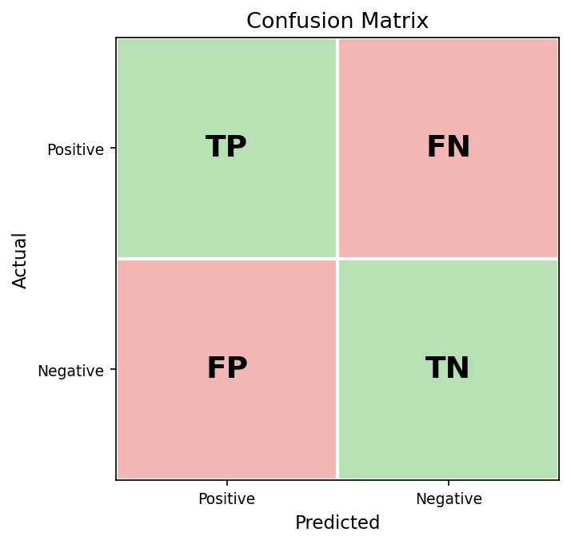
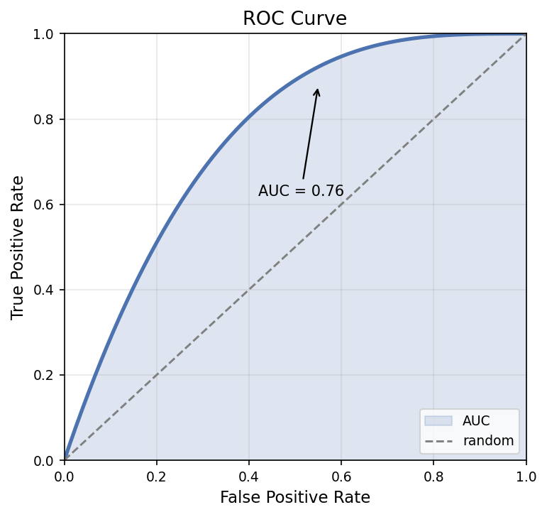

Géron《Hands-On ML》Ch1–9 重點整理¶
本文整併自《Hands-On Machine Learning with Scikit-Learn, Keras & TensorFlow》（Aurélien Géron）第 1–9 章的學習筆記，聚焦核心觀念 + 最小可跑的 scikit-learn 範例 + DS 面試常考點。每章末附「面試口答範本」，是用來練習把觀念講清楚的，而不是背稿。
全書心智圖¶
第 1–9 章其實是一條完整的路：先建立 ML 的世界觀（Ch1），走一遍端到端專案（Ch2），再逐一深入分類與評估（Ch3）、線性模型與訓練原理（Ch4）、三大經典模型家族（Ch5 SVM、Ch6 樹、Ch7 集成），最後進入非監督的兩支主力——降維（Ch8）與分群（Ch9）。
| 章 | 主題 | 一句話重點 |
|---|---|---|
| Ch1 | ML 全景 | ML 是「從資料學規則」，規則太複雜或會變就用它 |
| Ch2 | 端到端專案 | 測試集最後才碰，用 Pipeline 防 leakage |
| Ch3 | 分類 & 評估 | imbalanced 不能看 accuracy，看 P/R/F1/AUC |
| Ch4 | 訓練模型 | 梯度下降是訓練核心，正則化是抗過擬合主力 |
| Ch5 | SVM | 最大化 margin，kernel 把非線性丟到高維變線性 |
| Ch6 | 決策樹 | 白盒、不需縮放，但易過擬合、不穩定 |
| Ch7 | 集成學習 | 三個臭皮匠：Bagging 降變異、Boosting 降偏差 |
| Ch8 | 降維 | PCA 抓最大變異方向；t-SNE/UMAP 只拿來視覺化 |
| Ch9 | 非監督 | K-Means 要先定 k，DBSCAN 找任意形狀+抓離群 |
Ch1｜The Machine Learning Landscape（ML 全景）¶
核心定義¶
- Arthur Samuel (1959)：讓電腦不需明確程式設計就能學習的研究領域。
- Tom Mitchell (1997)：程式在任務 T 上、用評估指標 P 衡量的表現，隨經驗 E 提升，就稱為「學習」。
什麼時候 ML 比傳統程式設計好？¶
- 規則太複雜或根本不知道（垃圾郵件、語音辨識）
- 環境會變、需要持續適應（詐欺偵測）
- 資料量大到人工規則無法維護
- 想反過來用模型幫人理解問題（Data Mining）
ML 系統的三條分類軸¶
- 是否有監督：Supervised／Unsupervised／Semi-supervised／Self-supervised／Reinforcement。
- 能否增量學習：
- Batch（離線）：一次訓練好，定期整批重訓。
- Online（線上）：持續吃新資料即時更新；
learning_rate太高會「忘掉」舊資料。 - 如何泛化：
- Instance-based：記住樣本、用相似度預測（KNN）。
- Model-based：從資料建模型再預測（線性回歸）。
完整 ML 專案流程（全書主軸）¶
定義問題（商業目標）→ 收集資料 → EDA → 資料準備（特徵工程）→ 選模型訓練 → 調超參數 → 部署監控。
常見陷阱¶
- 資料面：資料不足、不具代表性（Sampling Bias）、品質差（異常/缺失）、無關特徵（garbage in, garbage out）。
- 模型面：Overfitting（記住雜訊）、Underfitting（太簡單抓不到結構）。
No Free Lunch 定理¶
沒有任何模型在所有問題上都最好。必須依資料與問題選模型，並用交叉驗證比較。
🎤 面試口答重點
- ML vs 傳統程式：傳統是人把規則寫死（資料＋規則→答案）；ML 是給資料＋答案，讓機器自己找規則。規則太複雜或會變就用 ML。
- Batch vs Online：資料可控、變化慢用 Batch（如月底重訓）；資料流不斷、環境變化快用 Online（如詐欺偵測），但要小心 learning_rate。
- Sampling Bias：訓練資料分佈與真實世界不一致。經典案例是 1936 美國大選電話民調——只有有錢人有電話，樣本不代表全體。
- No Free Lunch：沒有萬用模型，所以要試多種、用 CV 比較，讓資料說話。
Ch2｜End-to-End ML Project（端到端專案）¶
以加州房價預測為例走完整流程。這章是全書的骨架。
Step 1：定義問題¶
從商業目標 → 技術問題 → 評估指標。輸出連續 → 回歸；釐清可接受誤差、上下游 pipeline 的資料格式。
Step 2：載入與快速瀏覽¶
import pandas as pd
df = pd.read_csv('housing.csv')
df.head(); df.info(); df.describe()
df['ocean_proximity'].value_counts()
Step 3：先切測試集（最關鍵）¶
必須在 EDA 之前切，否則你的眼睛「看過」測試集就等於 leakage。imbalanced 時用分層抽樣：
from sklearn.model_selection import train_test_split, StratifiedShuffleSplit
import numpy as np
df['income_cat'] = pd.cut(df['median_income'],
bins=[0, 1.5, 3.0, 4.5, 6., np.inf], labels=[1,2,3,4,5])
split = StratifiedShuffleSplit(n_splits=1, test_size=0.2, random_state=42)
for tr, te in split.split(df, df['income_cat']):
strat_train, strat_test = df.loc[tr], df.loc[te]
Step 4：EDA（只在訓練集上做）¶
分佈圖 df.hist()、地理散佈圖、相關係數 df.corr()['median_house_value']、scatter_matrix。
Step 5：資料準備用 Pipeline 包起來¶
from sklearn.pipeline import Pipeline
from sklearn.preprocessing import StandardScaler, OneHotEncoder
from sklearn.impute import SimpleImputer
from sklearn.compose import ColumnTransformer
num_pipeline = Pipeline([
('imputer', SimpleImputer(strategy='median')),
('scaler', StandardScaler()),
])
full_pipeline = ColumnTransformer([
('num', num_pipeline, num_attribs),
('cat', OneHotEncoder(), ['ocean_proximity']),
])
housing_prepared = full_pipeline.fit_transform(strat_train)
Step 6–7：多模型比較 → 調參¶
先用 cross_val_score 比較 LinearRegression／DecisionTree／RandomForest，再對最佳者用 GridSearchCV／RandomizedSearchCV 調參。CV 分數比 training score 可信。
本章四個觀念¶
- 測試集最後才碰，提前看 = leakage。
- 用 Pipeline 包前處理＋模型，防 leakage 又方便部署。
- 先多模型快速比較，再選最好的調參。
- CV 分數 > training score。
🎤 面試口答重點
- 為何 EDA 前先切測試集：先看過測試集分佈，會在特徵選擇/填補/設計上不自覺針對它做決策，測試分數過度樂觀，部署後變差。
- Pipeline 好處：① 防 leakage（fit 只看訓練集，transform 用同參數套用驗證/測試）；② 方便部署（前處理＋模型包成一個物件）。
- Grid vs Randomized：超參數少、範圍明確用 Grid；多/廣/首次探索用 Randomized。實務先 Randomized 縮範圍，再 Grid 精調。
- Stratified vs 一般切分：一般隨機切可能讓類別分佈不一致；imbalanced 一定要分層，否則測試集可能完全沒有少數類別。
Ch3｜Classification（分類與評估指標）¶
主軸是 MNIST 手寫數字辨識，從二元分類「是不是 5」切入。
不要相信 Accuracy¶
imbalanced 時，模型只要永遠猜多數類就有高 accuracy。用 DummyClassifier（永遠猜「不是 5」）也能拿到 ~90%。imbalanced 一定要看 F1 或 AUC。
Confusion Matrix → Precision / Recall¶
from sklearn.model_selection import cross_val_predict
from sklearn.metrics import confusion_matrix, precision_score, recall_score, f1_score
y_pred = cross_val_predict(sgd_clf, X_train, y_train_5, cv=3)
confusion_matrix(y_train_5, y_pred)
precision_score(...) # 預測為正的，多少真的是正
recall_score(...) # 所有真正的正，抓到多少
f1_score(...) # 兩者調和平均

圖：混淆矩陣。對角（TP/TN）為答對；FN＝漏報、FP＝誤報。Precision=TP/(TP+FP)、Recall=TP/(TP+FN)。Threshold 調整與業務情境¶
用 decision_function 取分數，畫 precision-recall 曲線後依情境定 threshold：
- 癌症篩檢 → 調低 threshold → 拉高 Recall（寧可誤報）
- 垃圾郵件 → 調高 threshold → 拉高 Precision（不誤判重要信）
ROC / AUC 與曲線選擇¶
roc_curve + roc_auc_score。Positive 樣本很少（imbalanced）用 PR curve，因為 ROC 的 FPR 會被大量 Negative 稀釋，看起來漂亮卻不真。

圖：ROC 曲線越往左上、AUC（曲線下面積）越大；對角虛線＝隨機猜測（AUC=0.5）。多元分類：OvR vs OvO¶
- OvR：訓 N 個「是不是這類」，選分數最高。快。
- OvO：訓 N×(N−1)/2 個，每對一個，投票。SVM 因訓練時間對資料量敏感而偏好 OvO。
🎤 面試口答重點
- imbalanced 不能只看 accuracy：全猜多數類就能騙高分（99% 正常／1% 詐騙 → 全猜正常也 99%），詐騙全漏。要看 P/R/F1 或 PR curve。
- Precision vs Recall 怎麼選：看哪種錯誤代價大。癌症漏診嚴重 → 最大化 Recall；誤判重要信嚴重 → 最大化 Precision；都重要看 F1。
- PR vs ROC：Positive 很少時用 PR curve（ROC 會被 Negative 稀釋而虛高）。
- OvR vs OvO：OvR N 個分類器、快；OvO N×(N−1)/2 個、每個訓練資料少，SVM 偏好。
Ch4｜Training Models（訓練模型：梯度下降與正則化）¶
線性回歸的兩種解法¶
- 解析解 Normal Equation：
θ = (XᵀX)⁻¹Xᵀy。要求逆矩陣，複雜度 O(n³)，特徵數大就很慢（~10 萬就不可行）。 - 梯度下降：對特徵數是線性複雜度，高維時改用它。
Polynomial Regression¶
線性模型也能學非線性——加入次方項即可（PolynomialFeatures(degree=2) 把 [x] 變 [x, x²]）。degree 太高會 overfit。
Learning Curve（診斷 bias/variance 的工具）¶
用 learning_curve 畫訓練/驗證誤差對資料量的曲線：
- 兩條線都高且靠近 → Underfitting（high bias）：加特徵、換更強模型。
- 訓練低、驗證高、兩線分很開 → Overfitting（high variance）：加正則化、加資料、刪特徵。
正則化線性模型¶
| 模型 | 懲罰 | 效果 | 何時用 |
|---|---|---|---|
| Ridge (L2) | Σθ² | 係數均勻縮小、不歸零 | 預設、不確定時 |
| Lasso (L1) | Σ|θ| | 不重要係數直接歸零（自動特徵選擇） | 特徵多、疑多數無用 |
| Elastic Net | L1+L2（l1_ratio） |
兩者折衷 | 特徵數 > 樣本數 |
注意參數方向：Ridge/Lasso 的 alpha 越大正則化越強；LogisticRegression 的 C = 1/λ，越小正則化越強（方向相反）。
Early Stopping¶
驗證誤差開始回升就停止訓練——本質上是一種正則化（防止模型把訓練越久越記住雜訊）。
🎤 面試口答重點
- Normal Equation 何時不適用：O(n³) 要求逆矩陣，特徵數大就很慢，改用梯度下降（對特徵數線性）。
- Learning curve 怎麼讀：兩線都高=underfitting（加特徵/換模型）；兩線分很開=overfitting（加正則化/加資料/刪特徵）。
- Ridge/Lasso/Elastic Net：不確定用 Ridge；特徵多疑多數無用用 Lasso（自動特徵選擇）；特徵數>樣本數用 Elastic Net。
- Early stopping 是正則化嗎：是。在驗證誤差回升時停，防死記訓練集，效果類似 L2。
Ch5｜Support Vector Machines（SVM 與 Kernel Trick）¶
核心直覺¶
目標是找最大化 margin的決策邊界；落在邊界上的點叫 Support Vectors（移掉其他點不影響邊界）。
Hard vs Soft Margin¶
- Hard：所有點必須在正確側，對 outlier 零容忍，現實幾乎不用。
- Soft：允許少數越界，用
C控制：C 大 → margin 小、不容違規 → 易 overfit；C 小 → margin 大、較簡單。
# SVM 必須先標準化！
svm_clf = Pipeline([('scaler', StandardScaler()),
('svm', SVC(kernel='rbf', C=1.0, gamma='scale'))])
Kernel Trick¶
線性不可分時，映射到高維變線性可分；kernel 的妙處是不真的算高維座標，直接算高維內積。常用核：Linear、Polynomial、RBF（預設最常用，參數 γ）、Sigmoid。 - γ 大 → 單點影響範圍小 → 易 overfit；γ 小 → 範圍大 → 較平滑。
兩大缺點¶
- 樣本數大時很慢（O(m²)~O(m³)）。
- 對特徵尺度非常敏感——新手最常忘記標準化。
🎤 面試口答重點
- C 與 γ：C 控制容許違規程度（大→margin 小易 overfit）；γ（RBF 專屬）控制單點影響範圍（大→範圍小易 overfit）。
- Kernel Trick：低維線性不可分 → 高維可分；不需真的映射，直接算高維內積，省計算。
- 為何必須標準化：margin 用歐氏距離，若一特徵 10000、另一 0.1，距離被大數值主導，margin 偏斜。
- SVM vs Random Forest：資料少且高維（文字 TF-IDF）用 SVM；資料大、要可解釋、特徵多雜用 RF（快、免標準化、有 importance）。
Ch6｜Decision Trees（決策樹）¶
運作原理（CART）¶
逐步找「特徵 k + 閾值 t」把資料切成最「純」的兩組。不純度指標：
- Gini 1 − Σpᵢ²（sklearn 預設、較快）
- Entropy −Σpᵢlog pᵢ（結果相近、稍慢）
抗 overfitting 的超參數¶
max_depth、min_samples_split、min_samples_leaf、max_features、max_leaf_nodes——決策樹極易 overfit，一定要限制。
回歸樹：對新點預測其所屬葉節點內訓練樣本的平均值。
優缺點¶
- 優：可解釋（可視覺化）、不需標準化、數值/類別皆可、訓練快。
- 缺：極易 overfit、不穩定（資料小變動 → 樹差很多）→ 這正是要用 Random Forest 的原因。
🎤 面試口答重點
- Gini vs Entropy：都是不純度指標，Gini 較快、結果相近，實務用預設 Gini。
- 為何不需標準化：CART 分裂只看大小順序（閾值切兩邊），與絕對數值無關，縮放不改變分裂——樹模型全家都免標準化。
- CART 為何 greedy：全局最佳分裂是 NP-hard，只能每層貪心；代價是不保證全樹最佳、結果不穩 → 用 RF 從外部建立穩定性。
- feature importance：看每個特徵在所有分裂節點降低多少不純度的加權平均；樹模型家族共通（RF 同法）。
Ch7｜Ensemble Learning & Random Forests（集成學習）¶
核心思想¶
多個較弱的學習器組合可能勝過單一強模型——前提是各模型彼此獨立、具多樣性。
Voting¶
- Hard voting：多數決。
- Soft voting：平均預測機率（通常更好，但成員需能輸出機率，
SVC(probability=True)）。
Bagging / Pasting 與 OOB¶
- Bagging＝有放回抽樣分給各模型；Pasting＝無放回。
bootstrap=True/False切換。 - OOB 評估：Bagging 每棵樹平均用到約 63% 樣本，剩 ~37% 沒參與，天然當驗證集（
oob_score=True免費拿到 validation score）。
Random Forest¶
比「Bagging + 決策樹」更好的關鍵：每次分裂只看隨機子集特徵，降低樹間相關性、增加多樣性。Extra-Trees 連分裂閾值也隨機選，更快但 bias 略高。
Boosting¶
- AdaBoost：每輪提高上一輪被分錯樣本的權重，最後加權投票。
- Gradient Boosting（業界主力）：每棵新樹去擬合前面的殘差。
learning_rate與n_estimators要一起調（學習率小→需要更多樹）；subsample<1變 Stochastic GB 可防 overfit；可用staged_predict做 early stopping。
Stacking¶
對各基模型的預測再訓練一個 blender；blender 必須用 hold-out（模型沒見過的資料）訓練，否則學到過度樂觀的權重。
🎤 面試口答重點
- Bagging vs Boosting：Bagging 並行、各自從子集訓練後投票/平均，降 variance；Boosting 序列、後者專攻前者的錯誤，降 bias。
- RF 為何優於 Bagging+樹：多了「分裂只看隨機特徵子集」，否則各樹都先選同一最強特徵 → 高度相關，投票失去意義。
- OOB 為何約 37%：有放回抽樣下每樣本被選中機率約 63%，剩 ~37% 形成天然驗證集。
- Stacking blender 為何用沒見過的資料：用訓練集預測來訓 blender 會過度樂觀；hold-out 才能學到「新資料上各層怎麼整合最好」。
Ch8｜Dimensionality Reduction（降維）¶
為什麼降維¶
對抗維度詛咒（高維下資料稀疏、距離失義）、加速訓練、去雜訊，以及最重要的視覺化（壓到 2D/3D）。
PCA¶
找資料變異最大的方向（對共變異矩陣做 SVD，特徵向量＝主成分，彼此正交、變異依次遞減）投影。
from sklearn.decomposition import PCA
pca = PCA(n_components=0.95) # 直接保留 95% 變異
X_reduced = pca.fit_transform(X_train)
pca.explained_variance_ratio_ # 每個主成分解釋的變異比
IncrementalPCA；極高維 sparse（文字）可用 Random Projection。
視覺化專用：t-SNE / UMAP¶
擅長呈現集群結構（UMAP 比 t-SNE 快、更保留全局結構）。只能用於視覺化，不可當特徵前處理——它們是 transductive，新資料沒有固定函數可 transform。
🎤 面試口答重點
- 主成分是什麼/怎麼找：資料變異最大的方向，對共變異矩陣 SVD 求特徵向量；兩兩正交、變異遞減。
- 降維後新資料怎麼預測：用訓練集 fit 的同一 PCA 物件 transform 再進模型；包進 Pipeline 就不會忘。
- t-SNE/UMAP 為何不能做特徵工程：transductive，新點無固定 transform；且計算貴。PCA 有明確 fit/transform 分離才適合前處理。
- 變異解釋比：各主成分佔總變異的百分比；累積到門檻（如 0.95）即可決定取幾個。
Ch9｜Unsupervised Learning（K-Means / DBSCAN / GMM）¶
K-Means¶
隨機初始化 K 個質心 → 分配最近 → 更新質心 → 反覆至收斂。KMeans++（預設）讓初始質心彼此遠離。選 K：Inertia 手肘圖或 Silhouette Score（−1~1，越高越好）。
限制：假設球形、尺度相近、必須先給 K、對 outlier 敏感。
DBSCAN¶
用密度定群（eps 半徑內鄰居數 ≥ min_samples 即核心點），不需指定 K、能找任意形狀、自動標 outlier（label = −1）；缺點是高維表現差。
GMM¶
輸出機率（軟分配，處理群組重疊更自然）、假設橢圓形（比球形靈活），低機率密度樣本可做異常檢測。
| K-Means | DBSCAN | GMM | |
|---|---|---|---|
| 需指定 K | 是 | 否 | 是 |
| 群組形狀 | 球形 | 任意 | 橢圓 |
| 處理 outlier | 否 | 是 | 低 |
| 輸出 | 硬分群 | 分群+outlier | 機率 |
🎤 面試口答重點
- K-Means 是全局最佳嗎：否，greedy 只收斂到局部最佳；故
n_init多次取 inertia 最小。 - 為何對狹長群組差：用歐氏距離、假設球形；狹長群邊緣點離自群質心反而更遠 → 分錯。改用 DBSCAN/GMM。
- DBSCAN 為何免指定 K：用密度定群，群數自然浮現；不屬任何群的標 −1 即 outlier。
- GMM vs K-Means：GMM 軟分配輸出機率、橢圓形假設更靈活、可做異常檢測；K-Means 是硬分配、球形。
一頁總複習（面試前掃這個）¶
- 評估：imbalanced 看 P/R/F1/AUC，不看 accuracy；Positive 少用 PR curve。
- 訓練：梯度下降是核心；learning curve 診斷 bias/variance。
- 正則化：Ridge 縮小不歸零、Lasso 歸零（選特徵）、Elastic Net 折衷；early stopping 也是正則化。
- 模型抉擇：高維小資料→SVM（要標準化）；要可解釋/免標準化/有 importance→樹家族。
- 集成：Bagging 降 variance（RF）、Boosting 降 bias（GBDT/XGBoost）。
- 降維：PCA 抓最大變異；t-SNE/UMAP 只視覺化。
- 分群：要先給 K 且球形→K-Means；任意形狀+抓 outlier→DBSCAN；要機率+異常檢測→GMM。
📌 延伸：樹模型家族（RF/XGBoost/LightGBM）、特徵工程、評估指標等主題另見〈ML 面試核心觀念〉與〈特徵工程心法〉。